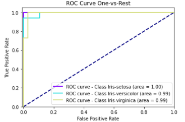

Função do componente
Este componente realiza predições usando um modelo Multi-layer Perceptron para classificação usando Scikit-learn.
Scikit-learn é uma biblioteca open source de machine learning que suporta apredizado supervisionado e não supervisionado. Também provê várias ferramentas para ajustes de modelos, pré-processamento de dados, seleção e avaliação de modelos, além de outras funcionalidades.
Entrada esperada
Espera-se como entrada para o componente uma tabela com colunas que representam valores numéricos ou categóricos.
Parâmetros
Na tabela abaixo, observamos os parâmetros necessários para que o componente funcione da maneira correta:
Atributo alvo |
| - | Seu modelo será treinado para prever os valores do alvo. |
Modo de seleção das features |
|
| Se deseja informar quais features deseja incluir no modelo, selecione a opção ‘incluir'. Caso deseje informar as features que não devem ser utilizadas, selecione ‘remover'. |
Features para incluir/remover no modelo |
| - | Seu modelo será feito considerando apenas as features selecionadas. Caso nada seja especificado, todas as features serão utilizadas |
Features para fazer codificação ordinal |
| - | Seu modelo utilizará a codificação ordinal para as features selecionadas. As demais features categóricas serão codificadas utilizando One-Hot-Encoding. |
Camada Oculta", |
| - | O i-ésimo elemento representa o número de neurônios na i-ésima camada oculta. |
Ativação |
|
| Função de ativação para a camada oculta. |
Solucionador |
|
| Algoritmo a ser usado no problema de otimização. |
Taxa de Aprendizado |
|
| Programação da taxa de aprendizado para atualização de peso. |
Iteração |
| - | Iteração", description:"Número máximo de iterações. |
Embaralhamento |
|
| Se as amostras devem ser embaralhadas em cada iteração. Usado somendo quando solver tiver ‘sgd' ou ‘adam' como valor. |
Método de Predição |
|
| Se optar por ‘predict_proba', o método de predição será a probabilidade estimada de cada classe, já o ‘predict' prediz a qual classe pertence. |
Métricas de performance
- Acurácia: Indica uma performance geral do modelo. Dentre todas as classificações, quantas o modelo classificou corretamente.
- Recall: Dentre todas as situações de classe positivo como valor esperado, quantas estão corretas.
- F1-Score: Média harmônica entre precisão e recall.
- Suporte: Número de ocorrências de cada classe esperadas
- Matriz de confusão: Tabela que mostra as frequências de classificação para cada classe do modelo
Retorno esperado no experimento
- Matriz de confusão:

- Curva ROC:

Retorno esperado na implantação
Tabela com os valores preditos para o atributo alvo.